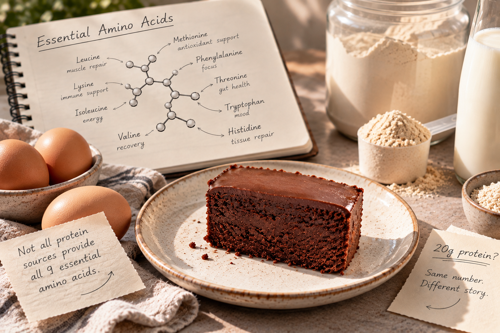

Not All Protein Is Created Equal. Here’s Why.

Two snacks, 20 grams of protein each. One of them may be doing a lot more for you.
You pick up two snacks at the store and both labels say 20 grams of protein. Same number, so it feels like the same choice. It often isn’t. The gram count tells you how much protein is in the pack and nothing about what kind it is or how much of it your body can actually use.
This post explains what protein quality means, how common sources compare, and what to look for on a label. It also explains why ProDani cakes get their protein from whey and eggs.
Short answer: protein quality comes down to two things, the amino acid profile and digestibility. Two foods with the same grams of protein can differ on both, so they can give you different nutritional benefits.
What protein actually does in your body
Protein is made of smaller building blocks called amino acids. Your body uses them to repair muscle, support your immune system and keep tissues healthy.
Nine of these amino acids are essential. That means your body can’t make enough of them on its own, so they have to come from food. This is the reason the type of protein matters and not only the amount.
What makes one protein better than another
Two things decide how useful a protein is to you.
Amino acid profile
Does the protein give you all nine essential amino acids, and in adequate amounts? A source that covers all nine is doing the full job. One that is low in a few of them is doing part of it.
Digestibility
How well can your body break the protein down and absorb its amino acids? Protein you can’t digest well never reaches the muscle and tissue that need it.
Two foods can match on the label and still differ on both counts, which is why 20 grams from one source can be worth more to you than 20 grams from another.
How common protein sources compare
Whey protein
Whey is highly digestible and has plenty of leucine, an amino acid that matters for stimulating muscle protein synthesis, the process your body uses to build and repair muscle.
Egg protein
Eggs give you all nine essential amino acids, also in a highly digestible form.
Plant protein
Plant protein can be excellent too. Soy covers all nine essential amino acids on its own, and eating a variety of plant foods across the day helps cover your amino acid needs.
Should you only eat high quality protein?
No. Your total protein for the day, the variety in your diet and your own needs matter more than checking every single source. A snack with a less complete protein is fine when the rest of your day fills in the gaps. Knowing the difference just helps you choose with your eyes open.
How to use this when you read a label
- Look past the grams and find the protein source in the ingredient list.
- Whey, eggs and soy are the sources covered above. Eggs and soy provide all nine essential amino acids, and whey is highly digestible and high in leucine.
- Think in days, not snacks. Variety across the day covers what any single food misses.
Why ProDani cakes use whey and eggs
We think the ingredients behind the protein matter as much as the number on the label. That’s why our cakes get their protein from whey and eggs, two high quality sources. A protein cake should give you more than an impressive number. It should taste incredible too.
Shop the personal protein cakes: prodanimiami.com/collections/personal-protein-cakes
Frequently asked questions
What are essential amino acids?
The nine amino acids your body can’t make in sufficient amounts, so you have to get them from food.
Do two foods with the same grams of protein give the same benefit?
Not always. They can differ in amino acid profile and digestibility, so the same number on the label can mean different nutritional benefits.
Is plant protein good enough?
It can be. Soy provides all nine essential amino acids, and eating a variety of plant foods helps meet your amino acid needs.
Sources and further reading
- FAO (2013). Dietary Protein Quality Evaluation in Human Nutrition. FAO Food and Nutrition Paper 92.
- Phillips, S. M. (2016). The impact of protein quality on the promotion of resistance exercise-induced changes in muscle mass. Nutrition & Metabolism.
- van Vliet, S., Burd, N. A., & van Loon, L. J. C. (2015). The skeletal muscle anabolic response to plant- versus animal-based protein consumption. The Journal of Nutrition.